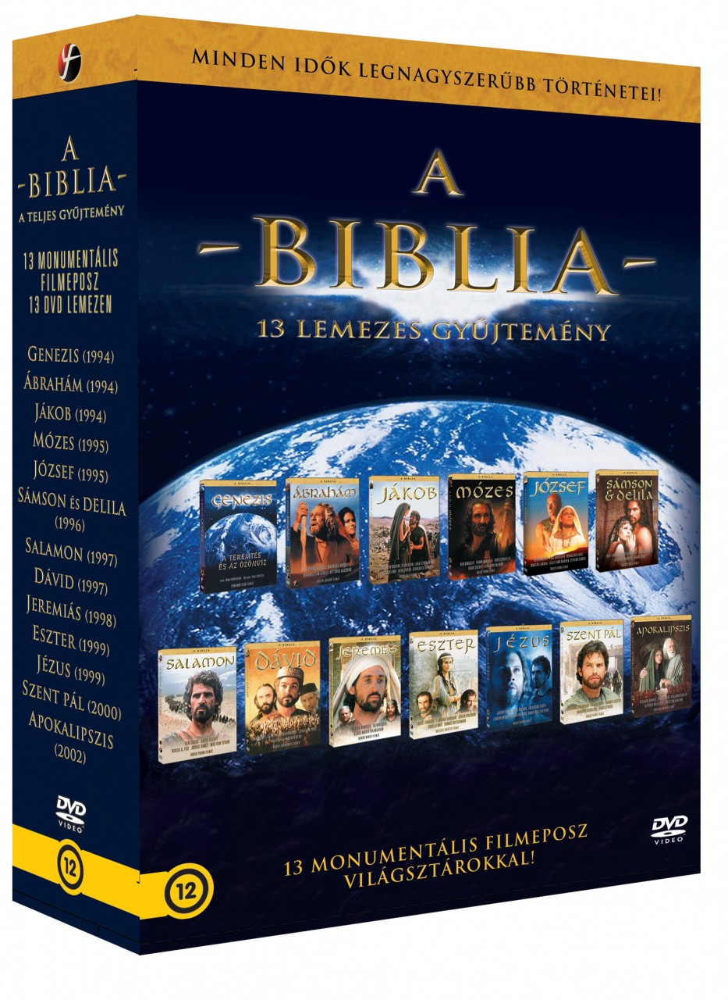

A
Biblia - A teljes gyűjtemény
http://dvdbluray.hu/a-biblia-a-teljes-biblia-gyujtemeny-dvd.html
Megjelenés
éve: 1994-2002
DVD Megjelenés: 2008
Hossz: 1794
perc
Rendezők:
Roger Young, Nicolas Roeg, Harry
Winer, Peter Hall, Ermanno Olmi, Raffaele Mertes, Robert Markowitz,
Joseph Sargent
Főszerepekben:
Johannes Brandrup,
Franco Nero, Daniela Poggi, Barbora Bobulova, Faith Brook, Jack
Hedley, Eric Thal, Elizabeth Hurley, Michael Gambon, Dennis Hopper,
Jonathan Rhys Meyers, Max von Sydow, Ben Cross, Anouk Aimée, Vivica
A. Fox, Umberto Orsini, Richard Dillane, Dexter Fletcher, Ben
Kingsley, Frank Langella, Christopher Lee, Enrico Lo Verso, Philip
Stone, Anita Zagaria, Geraldine McEwan, David Suchet, Paul Mercurio,
Martin Landau, Lesley Ann Warren, Alice Krige, Dominique Sanda,
Warren Clarke, Monica Bellucci, Jeremy Sisto, Debra Messing, Armin
Mueller-Stahl, Jacqueline Bisset, Gary Oldman, David O'Hara, Claudio
Amendola, Klaus Maria Brandauer, Silas Carson, Patrick Dempsey,
Stuart Bunce, Matthew Modine, Lara Flynn Boyle, Sean Bean, Joss
Ackland, Juliet Aubrey, Irene Papas, Giancarlo Giannini, Daniel
Newman, Annabi Abdelialil, Omero Antonutti, Sabir Aziz, B. Haddan
Mohammed, Haddou Zoubida, Louise Lombard, F. Murray Abraham, Jürgen
Prochnow, Thomas Kretschmann, Ornella Muti, Frank Baker, Nathaniel
Parker, Jonathan Pryce, Leonard Nimoy, Sheryl Lee, Ben Daniels,
Richard Ashcroft, Gideon Turner, Maurice Roëves, Richard Harris,
Vittoria Belvedere, Benjamin Sadler, Christian Kohlund, Ian Duncan,
Bruce Payne, Barbara Hershey, Gottfried John, Paolo Bonacelli,
Maximilian Schell, Vittorio Gassman
1 - Genezis: A
teremtés és az özönvíz (Genesi: La creazione e il diluvio)
Kaland / Fantasy / Dráma, 1994 - amerikai-német-olasz
film
Rendezte: Ermanno Olmi
Főszerepben: Annabi
Abdelialil, Omero Antonutti, Sabir Aziz, B. Haddan Mohammed, Haddou
Zoubida
A Föld, a víz és a szárazföld, az ember, a
férfi és a nő teremtésének ősi történetét elevenítik meg e
film költői szépségű képsorai. Egy vén nomád pásztor valahol
a pusztában egyszerű szavakkal mesél a tüzet körülülő
gyermekeknek Ádámról és Éváról, a tudás fájáról, az
Édenkertből való kiűzetésről, Káin bűnéről, Noé bárkájának
történetéről, s legvégül a szivárványról, mely megpecsételi
az Isten emberrel kötött szövetségét.
2 - Ábrahám
(Abraham)
Kaland / Dráma, 1994 -
francia-cseh-amerikai-olasz-német film
Rendezte: Joseph
Sargent
Főszerepben: Richard Harris, Barbara Hershey,
Gottfried John, Paolo Bonacelli, Maximilian Schell, Vittorio Gassman
A nagy világvallások közül három is - a
kereszténység, az iszlám és a zsidó vallás - az ősatyák
sorában tartja számon Ábrahámot, az első embert, akivel Isten
szövetséget kötött, s az egyetlent, aki Isten barátjának
nevezhette magát. Ábrahám volt az, aki Kánaán földjére vezette
népét, miután a nomád törzs hosszan vándorolt a pusztaságban.
E monumentális filmalkotás Richard Harris (Harry Potter, Nincs
bocsánat, Gladiátor) nagyszerű alakításában tárja elénk a
pásztorból lett hős életét, akinek hitét az isteni akarat
folyamatosan kemény próbatételeknek veti alá.
3 -
Jákob (Jacob)
Életrajzi / Történelmi / Krimi / Dráma,
1994 - amerikai-német-olasz-angol-francia-cseh film
Rendezte:
Peter Hall
Főszerepben: Matthew Modine, Lara Flynn Boyle, Sean
Bean, Joss Ackland, Juliet Aubrey, Irene Papas, Giancarlo Giannini,
Daniel Newman
Mikor Izsák felesége, Rebeka várandós
lett, Isten elárulta neki, hogy két gyermeket hordoz szíve alatt,
akik két nagy nép atyjává lesznek majd egyszer s a fiatalabb fiú
legyőzi és szolgájává teszi az idősebbet. Mikor Ézsau és
Jákob felnőnek, a jóslat be is igazolódik. Jákob egy tál
lencséért könnyen megveszi fivérétől az elsőszülöttség
jogát, az atyai áldást pedig csellel szerzi meg. Hiába tesz szert
azonban előnyökre, nehéz sorsot szán neki a végzet. Sok évig
dolgozik Lábán szolgájaként, mire önálló életet kezdhet
családjával. Hazatérve pedig testvérbátyja haragjával kell
szembesülnie. Mivel azonban Jákob képesnek mutatkozik Isten színe
előtt alázatot mutatni, kiérdemli az új nevet: Izrael, ami annyit
tesz – Isten fejedelme.
4 - Mózes (Moses)
Történelmi
/ Életrajzi / Kaland / Krimi / Dráma, 1995 -
amerikai-cseh-angol-francia-olasz-német-spanyol film
Rendezte:Roger Young
Főszerepben: Ben Kingsley,
Frank Langella, Christopher Lee, Enrico Lo Verso, Philip Stone, Anita
Zagaria, Geraldine McEwan, David Suchet
Az Ótestamentum
ősatyái közül Mózes valószínűleg a legellentmondásosabb
személyiség. A nehéz beszédű ifjút a zsidók egyiptominak
tekintik, de az egyiptomiak közt is idegennek számít. Mégis őt
jelöli ki az Úr, hogy Izrael fiait megszabadítsa az egyiptomi
fogság nehéz igájából és elvezesse őket az ígéret földjére.
Hatalma talán egyik bibliai ősatyáéhoz sem fogható: utat nyit
népe előtt a Vörös-tengeren s a sziklából vizet fakaszt.Ő ad
kőbe vésett törvényt a zsidó népének, s e törvények máig a
nyugati világ erkölcsi értékeinek alapjául szolgálnak.
5
- József (Joseph)
Kaland / Dráma, 1995 -
olasz-amerikai-német film
Rendezte: Roger Young
Főszerepben: Ben Kingsley, Paul Mercurio, Martin Landau,
Lesley Ann Warren, Alice Krige, Dominique Sanda, Warren Clarke,
Monica Bellucci
Jákob legkedvesebb fia, József már
kisgyermek korában is kirítt testvérei sorából. Mikor
ifjúkorában kiderül, hogy Isten csodálatos adományaként
álomfejtői képességgel rendelkezik, végképp magára haragítja
durva lelkű fivéreit, akik a kútba hajítják, majd eladják
Egyiptomba rabszolgának. József azonban mindig bízik az isteni
gondviselésben. Hitének köszönheti, hogy a rabszolgasorból
először az egyiptomi testőrparancsnok, Putifár jobb kezévé lép
elő, majd álomfejtései jóvoltából a fáraó első embere lesz.
Megmenti Egyiptom népét és a saját családját az éhhaláltól
és meg tud bocsátani azoknak, akik vétettek ellene.
6
- Sámson és Delila (Samson and Delilah)
Kaland / Dráma,
1996 - német-olasz-amerikai film
Rendezte: Nicolas Roeg
Főszerepben: Eric Thal, Elizabeth Hurley, Michael Gambon,
Dennis Hopper, Jonathan Rhys Meyers, Max von Sydow
Isten
Sámsont (Eric Thal) küldi, hogy Izrael népét felszabadítsa a
filiszteusok elnyomása alól. Hosszú időnek kell eltelnie azonban,
hogy az emberfeletti erővel megáldott férfi elfogadja küldetését
és alávesse magát Isten akaratának. Sámson ifjúkorát ugyanúgy
éli, mint a többi júdeai fiatal: a mezei munkákra, szórakozásra
és a lányokra fordítja minden figyelmét. Csak akkor fordul a
filiszteusok ellen, mikor azok megölik szeretteit. Ám amikor
megpillantja az előkelő filiszteus lányt, Delilát (Elizabeth
Hurley), a szerelem felülkerekedik a bosszúvágyon. Sámson naiv
odaadással kiszolgáltatja magát a szépségnek, aki árulással
viszonozza bizalmát. Sámsonra vakság, gyengeség és börtön vár.
7 - Salamon (Solomon)
Kaland / Dráma, 1997 -
angol-cseh-francia-olasz-német-amerikai film
Rendezte:
Roger Young
Főszerepben: Ben Cross, Anouk Aimée, Vivica A.
Fox, Max von Sydow, Umberto Orsini, Richard Dillane, Dexter Fletcher
Dávid legkedvesebb fiát, a derék és jólelkű
Salamont emberfeletti bölcsességgel ruházza fel Isten. Atyja
halálakor ő veszi át Izrael vezetését és nem csak bölcsessége
miatt lesz messze földön híres, hanem azért is, mert az ő
uralkodása alatt épül meg a jeruzsálemi Templom. A Templom
elsősorban szent hely, de megépülése azt is jelenti, hogy az
évszázadokig húzódó vándorlás után a zsidó nép végre hazát
alapított. Salamon okos politikája mellett az ország elkerüli a
háborúkat, s nem csak a számtalan feleségből és gyermekeikből
álló királyi család, de az egész nép élvezheti az oly régóta
várt békét és a jólétet.
Roger Young rendezésében e
monumentális filmalkotás a Biblia szellemiségéhez méltó módon
eleveníti fel minden idők legbölcsebb uralkodójának csodálatos
történetét.
8 - Dávid (David)
Kaland
/ Dráma, 1997 - amerikai-olasz-német film
Rendezte:
Robert Markowitz
Főszerepben: Nathaniel Parker, Jonathan
Pryce, Leonard Nimoy, Sheryl Lee, Ben Daniels, Richard Ashcroft,
Gideon Turner, Maurice Roëves
Miután Saul méltatlannak
bizonyult arra, hogy Izrael királya legyen, Isten az egyszerű
pásztorfiút, Dávidot választja új királynak. Az ifjú bátorsága
és éles elméje hamarosan megmutatkozik a filiszteusok ellen vívott
csatában, mikor legyőzi az óriás Góliátot. Később Saul és
fiai odavesznek egy véres ütközetben, és Dávid elfoglalja
trónját a pompás Jeruzsálemi palotában. Úgy tervezi, uralkodása
békés lesz. Templom építésére készül, mely egyszerre lenne a
Frigyláda háza, valamint Isten és az ember találkozásának
helyszíne.
9 - Jeremiás (Jeremiah)
Dráma,
1998 - olasz-német-amerikai film
Rendezte: Harry Winer
Főszerepben: Klaus Maria Brandauer, Silas Carson, Patrick
Dempsey, Stuart Bunce
Jeremiás még egészen fiatal,
mikor Isten nyilvánvalóvá teszi előtte, hogy ő a kiválasztott:
az Úr üzenetét kell közvetítenie Jeruzsálem vezetői és a nép
felé. A zsidók ugyanis egy ideje hamis bálványokat imádnak, és
ha ezzel nem hagynak fel, Istenük haragja jeléül ellenséget küld
rájuk, aki elpusztítja városukat. Jeremiás szavai azonban süket
fülekre találnak és nem csak a zsidó vezetők, de még saját
családja is elfordul tőle. A király egy hamis próféta szavára
hallgat Jeremiás helyett és abban bízik, hogy ha Babilon ura,
Nabukodonozor (Klaus Maria Brandauer) megtámadja a várost,
szövetségesük, Egyiptom a segítségükre siet.
10 -
Eszter (Esther)
Életrajzi / Történelmi / Romantikus /
Krimi / Dráma, 1999 - német-amerikai-olasz film
Rendezte:
Raffaele Mertes
Főszerepben: Louise Lombard, F. Murray
Abraham, Jürgen Prochnow, Thomas Kretschmann, Ornella Muti, Frank
Baker
Esztert, a zsidó árva leányt (Louise Lombard) az
istenhívő Márdokeus húgaként nevelte fel. Mikor Ahasvérus, a
perzsák királya elrendeli, hogy szűzlányokkal népesítsék be
háremét, a szépséges árvát is elhurcolják a katonák.
Eszter
azonban méltósággal viseli sorsát a perzsa udvarban, s
erényessége, éles elméje révén hamar kitűnik a többi
háremhölgy közül. A király királynéjává emeli és trónra
ülteti az okos leányt, Eszternek pedig sikerül lebeszélnie férjét
a kegyetlen tervről, hogy a perzsa birodalomban élő zsidókat
értelmetlenül elpusztítsák.
11 - Jézus (Jesus)
Életrajzi / Történelmi / Dráma, 1999 -
cseh-olasz-német-amerikai film
Rendezte: Roger Young
Főszerepben: Jeremy Sisto, Debra Messing, Armin Mueller-Stahl,
Jacqueline Bisset, Gary Oldman, David O’Hara, Claudio Amendola
Minden idők legismertebb története megelevenedik a
filmvásznon. Ebben az ezredfordulón készült, nagyszabású
filmben Jeremy Sisto alakítja Isten fiát, Názáreti Jézust, aki
egyszerű asztalosból válik szellemi vezetővé, filozófussá és
végül mártírrá. Jézus álmában egy véres csata képei
jelennek meg egy olyan világméretű háborúban, melyet Krisztus
nevében folytatnak és egy haldokló katona az ő nevét
ismételgeti. Vajon mi lehetett ez a rémálom? Kik ezek az emberek,
akik az ő nevében harcolnak?
12 - Szent Pál (San
Paolo)
Dráma / Misztikus, 2000 - olasz-cseh film
Rendezte: Roger Young
Főszerepben: Johannes
Brandrup, Franco Nero, Daniela Poggi, Barbora Bobulova, Faith Brook,
Jack Hedley
Krisztus kereszthalála után a zsidó
vallási vezetők nem tudnak egyetértésre jutni, hogy ki kell-e
állniuk Jézus tanítása mellett, vagy el kell vetniük azt. Jézus
legádázabb ellenségei Saul (Johannes Brandrup) és Rúben, két
magas rangú főpap. Saul Damaszkuszba is elmegy, hogy tűzzel-vassal
irtsa Jézus híveit. Út közben azonban különös dolog történik
vele: elveszíti látását, és hirtelen ráébred, hogy küldetése
éppen ellentétes azzal, amit hitt. Amikor Ananiás Isten
segítségével meggyógyítja, már tudja, mi valódi feladata:
Jézus igéjét hirdetni a pogányok között.
13 -
Apokalipszis (San Giovanni - L’apocalisse)
Dráma /
Misztikus, 2002 - olasz film
Rendezte: Raffaele Mertes
Főszerepben: Richard Harris, Vittoria Belvedere, Benjamin
Sadler, Christian Kohlund, Ian Duncan, Bruce Payne
Krisztus
után 90-ben a Római Birodalomban Domitianus császár uralkodik,
aki istennek, menny és föld urának tartja magát. A keresztények
nem ismerik el isteni voltát, ezért kegyetlenül üldözik őket.
János, az idős apostol faluját is római katonák lepik el.
Mindenkit lemészárolnak, csak János menekül meg az értelmetlen
pusztítás elől. Isten szavát követve elindul, hogy a végítélet
tanait terjessze a keresztények
között.
http://www.imdb.com/title/tt0109884/
BIBLIA